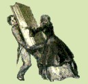

|

Sac. Enrico
Villa
San Matroniano
nella leggenda
e nella storia
Documenti e note critiche
Milano
Basilica dei SS. Apostoli
e Nazaro Maggiore
1942-XX
|
|
APPENDICI
VI - Milano affida la protezione e la difesa della metropoli a S. Matroniano
"Uomo di Dio"
Lettera indirizzata da S. E. il Card. Ildefonso Schuster al Rev. Parroco
della Basilica dei SS. Apostoli e Nazaro maggiore, pubblicata sul giornale
"L'Italia" il 9 marzo 1942.
"Ut recedant a nobis
Al Rev. Sig. Preposto-Parroco - Ai RR. Clero ed ai diletti Fedeli della
Ven. Parrocchia di San Nazaro.
La sera della futura solennità di Pentecoste, 24 maggio corr. Con
la grazia del Signore celebreremo la traslazione del corpo di San Matroniano
dal Duomo alla basilica di San Nazaro. Seguendo l'esempio del glorioso
San Carlo, ne diamo fin d'ora partecipazione all'Archidiocesi; ai Milanesi,
perchè vogliano partecipare devotamente al trasporto trionfale
delle sante Reliquie; a tutti gli altri fedeli, perchè si uniscano
spiritualmente con noi nell'invocare sulle nostre parrocchie la celeste
protezione del Santo.
Carte alla mano!
San Matroniano fa la sua prima apparizione nell'agiografia milanese in
un documento della fine del secolo VIII in cui, tra i diversi sepolcri
dei Santi venerati allora nella nostra città, si ricordano:
S. Nazarius martyr in sua pausat Ecclesia, et in uno angulo, sanctus morimonianus
(=Matronianus) confessor.
Infatti, come hanno dimostrato i recenti scavi, San Matroniano nel Medio
Evo riposava entro una speciale abside, a sinistra dell'emiciclo centrale
della Basilica Nazariana.
Chi era codesto San Matroniano?
Precedentemente al documento citato, la storia tace assolutamente a suo
riguardo. Pei secoli seguenti dal secolo IX sino a giorni nostri, le fonti
storiche c'informano appena del culto continuo e celebre che egli ha goduto
nella liturgia milanese. Anche presentemente, noi ne recitiamo l'annuo
ufficio con la Messa il giorno 14 dicembre, quando viene recensito nel
martirologio Romano: Mediolani, S. Matroniani haeremitae.
San carlo nel 1579, tra gli altri corpi santi sepolti nella Basilica Nazariana,
celebrò altresì la traslazione del corpo di San Matroniano.
Più tardi, invece dell'anico sacello absidato, venne eretta in
onoro del Santo un'artistica cappella, nell'interno del cui altare fu
riposto il sarcofago medievale, nel quale qualche mese fa abbiamo finalmente
ritrovate quelle sante Reliquie
Ricognizione canonica del sacro corpo
In quell'avello di pietra chiuso con graffe di ferro abbiamo ritrovata
una cassetta di bronzo munita di grossa targa di ottone col nome : Sanctus
Matronianus haeremitae.
Era la targa che vi aveva già riposta San Carlo.
Nell'interno della cassetta, c'era un deposito di ossa, assai friabili,
ma che non rappresentano che le parti superstiti più dure del sacro
corpo: 27 frammenti del cranio, una ventina di denti, 19 vertebre, 18
frammenti della pelvi, 15 ossa degli arti inferiori ecc. Accanto alla
cassetta, c'era però un grosso catino di terracotta, ripieno di
terriccio, nel quale notammo frammischiato con la terra una quantità
di altri frammenti ossei, parti di denti, minutissimi residui serici e
persino alcuni avanzi metallici di qualche fibula o ornamento, che doveva
aver fatto parte o della monastica cintura del Santo, o della primitiva
arca funebre.
Risulta che il corpo di San Matroniano per lunghi anni ha riposato in
terra; quando poi nell'alto medio Evo ne fu celebrata la traslazione a
San Nazaro, insieme con le ossa superstiti, venne raccolto e conservato
diligentemente anche il terriccio nel quale s'era risoluta una parte del
cadavere.
L'esame medico-legale del contenuto del sarcofago di san Matroniano, è
stato affidato alla perizia del dott. Prof. Giov. Judica il quale ha già
consegnati alla Ven. Curia Arcivesc. I risultati del suo studio accurato.
Trattasi d'un individuo di sesso virile, inumato da parecchi secoli, dalla
statura intorno ai m. 1,62 - 1,68, deceduto nell'età media della
vita (30-40 anni?).
Storia e poesia attorno alla sacra tomba
Dove però non giunge la storia, è arrivata invece la tradizione
o la pietà dei fedeli. A queste due fonti s'ispirò indubbiamente
l'antico pittore del secolo XV-XVI che decorò coi suoi quadri il
sacello sepolcrale di San Matroniano. Ce li descrive Puricelli, il quale
fece ancora a tempo a studiarli, prima che venissero distrutti nel rimodernamento
della Basilica Nazariana. Erano divisi in due ordini, l'uno superiore
e l'altro inferiore, e rappresentavano vari episodi della vita di San
Matroniano insieme con la relativa didascalia tratta dalla Legenda.
Riferiamo le scene principali:
I - Nascita di San Matroniano
II - Dai genitori viene offerto al Signore
III - Dietro impulso del Divino Spirito, dissemina la parola di Dio
IV - Sotto la guida dell'Angelo affronta la vita solitaria
V - Dall'Angelo viene sostenuto con pane inviatogli dal cielo.
VI - L'Angelo gli amministra la sacra Comunione
VII - Muore ancor giovane e viene sepolto dagli Angeli
VIII - Guglielmo Boccardo impetra la benedizione di sant'Ambrogio
IX - Il medesimo si meraviglia del gran latrare dei cani
X - Il medesimo ritrova il corpo di San Matroniano
XI - Il medesimo lo colloca su di un feretro
XII - Viene trasferito da Sant'Ambrogio e da tutto il Clero
XIII - S. Ambrogio tumula San Matroniano in San Nazaro.
Come si vede, la didascalia dei quadri dipende interamente dalla Legenda,
che sembra tuttavia sia rimasta sconosciuta a Goffredo da Bussero.
Elementi storici degli atti
Nel 1619, le pitture dell'oratorio nazariano di San Matroniano vennero
riprodotte anche nel coro del tempio di Sant'Ambrogio ad Nemus. Dei quadri
osservati già dal Puricelli non ne rimane invece che uno: San Matroniano
col codice del Vangelo e col giglio della sua purezza, in atto di preghiera
innanzi alla Madonna col Divin infante sulle ginocchia.
La pittura risale al secolo XV, ma dipende probabilmente da un quadro
più antico, perchè Goffredo da Bussero afferma precisamente
che San Matroniano si dipinge col giglio in mano: S. Matronianus confessor
est lilium; unde sancti confessores cum liliis dipinguntur in ecclesiis.
Anche il volume del Vangelo che il Santo reca in mano, non può
essere invenzione dell'artista che anzi lo veste addirittura da Cappuccino,
e deriva probabilmente da un modello più antico.
Se gli Atti del Santo c'ispirassero miglior fiducia codesto codice del
Vangelo in mano e l'ispirata predicazione della parola di Dio da parte
del Santo Anacoreta, potrebbe già essere degli elementi sufficienti,
per farci riconoscere sotto il "cucullion" monastico di Matroniano
un qualche antico presbitero milanese, come San Simpliciano, San Dazio
ecc., che poi si è ritirato a menare nell'eremo vita monastica.
Certo si è che doveva trattarsi di personaggio ragguardevolissimo
se venne sepolto non altrove che nella Basilica Romana, dove precisamente
nel V secolo si tumulavano i nostri grandi Arcivescovi.
Più tardi, anzi che a San Nazaro, sarebbe stato sepolto in altra
basilica, come infatti si fece anche per gli Arcivescovi durante gli assedi
e le successive occupazioni di Milano da parte dei Barbari.
Il giglio e la cintura monastica di S. Matroniano
Non abbiamo alcun altro elemento cronologico per poter stabilire almeno
l'anno mortuale del Santo. Ma la circostanza che il suo sacro corpo, prima
d'essere trasportato nella basilica nazariana giacque molti anni in terra
e lì in parte si dissolvè, rende per lo meno probabile la
sua asserita contemporaneità col nostro Sant'Ambrogio e con San
Simpliciano, monaco anche egli ed abate già dell'omonimo suo monastero.
Trattasi, dunque, di un antico monaco, o meglio, anacoreta, come si usava
prima di San Benedetto, il quale vise e morì a Sesto Ulteriano
nei dintorni di Milano, e di cui Dio coi prodigi manifestò il merito
e la gloria.
Narrano gli Atti, che sul petto del Santo venne pure trovata una specie
di fascia con una scritta indicante il suo nome, infatti, recentemente,
tra le ossa, abbiamo ritrovato dei frammenti serici e degli ornamenti
metallici di forma grossolanamente conica, di colorito verdastro, riferibili
probabilmente a dei fermagli enei d'una cintura monastica.
Come vedesi, l'età giovanile, la fascia sul petto ed il giglio
in mano, sono tutte circostanze che gli Atti non hanno punto inventato,
ma vengono confermate dalle recenti indagini sui reperti del sarcofago.
L'antica festa di S. Matroniano
Il Martirologio Romano - come abbiamo detto - assegna la festa di San
Matroniano ai XIV di dicembre. "Mediolani, sancti Matroniani haeremitae".
Ma molti secoli prima già ce la descriveva il nostro Beroldo, non
solo nel Calendario, ma nell'Ordo stesso della distribuzione del presbiterio:
"Per la solennità di San Matroniano, agli Ebdomadari, soldi
III; ai Custodi, denari XI; per il vino del calice, denaro I; per i Vecchioni,
denari X; pel pane e pel vino dei chierichetti cantori, denaro I".
Come è noto, la festa del Santo nella Basilica Nazariana, allora
era riservata al Capitolo Metropolitano.
Più tardi, nel secolo XVII, quando venne eretta in San Nazaro l'odierna
Cappella di San Matroniano, la sua devozione presso i fedeli Milanesi
prese un nuovo impulso, e furono allora celebrate delle feste insigni
e delle processioni in onore delle sue sacre Reliquie.
Gli insegnamenti del Santo
Oggi un nuovo ridestarsi della pietà milanese verso codesto Santo
Anacoreta pasciuto nel deserto dagli Angeli, riesce tanto più opportuna,
quando si pensa che la fiducia nella Divina Provvidenza la quale provvede
largamente agli uccelli dell'aria ed ai gigli dei campi, è precisamente
la virtù di cui in queste strettezze di vita abbiamo maggior bisogno.
San Matroniano nella solitudine di Sesto Ulteriano ricorda il Signore,
che consacrò gli inizi della sua predicazione con un ritiro di
quaranta giorni nel deserto.
Il Santo Anacoreta che, lungi da ogni consorzio umano conversa coi personaggi
del cielo ed è nutrito a sua volta da loro, ci ricorda quel detto
dell'Evangelo: "L'Uomo non vive solamente di pane, ma d'ogni parola
che procede dal labbro di Dio".
San Matroniano che almeno da tredici secoli viene venerato in San Nazaro
dalla pietà della nostra gente, le cui sacre ossa vengono ricomposte
nell'antico avello non altrimenti che per le mani immacolate del nostro
grande San Carlo, c'insinuano il pensiero, che nessuno oramai è
più Milanese di San matroniano, che con la sua intercessione protegge
e difende la città nostra da mille e quattrocento anni!
Milano affida la sua protezione a S. Matroniano: "Uomo di Dio"
Per tutti questi motivi, ben di cuore applaudiamo alla pia iniziativa
del Rev. Preposto Parroco di San Nazaro, di ricomporre il corpo sacratissimo
di san Matroniano entro una nuova ed artistica rna, e di celebrare la
traslazione dal Duomo alla sua Basilica con solennità di riti e
grandiosità di devozione.
Siamo sicuri che, insieme con il Clero e con le Associazioni Parrocchiali,
vi prenderà parte anche numerosissimo popolo, che, soprattutto,
in questi tempi, sente un gran bisogno di pregare e di ricorrere all'aiuto
del Cielo.
Nel messale Ambrosiano si contiene un'antica e bella preghiera per il
tempo di guerra, e che noi ben possiamo dirigere in questa circostanza
a San Matroniano, perchè tenga lontana da Milano ogni disgrazia
ed incursione.
Orazione
"Tu, o Uomo di Dio; prega il Signore per noi, perchè ci recan
danno i nostri stessi peccati. Prega, perchè Dio ci tratti secondo
la sua consueta, immensa misericordia, così che i nemici si allontanino
dalla nostra città. Alleluia."
Milano, 8 maggio 1942.
Ildefonso, Card. Arciv."
|
|
|